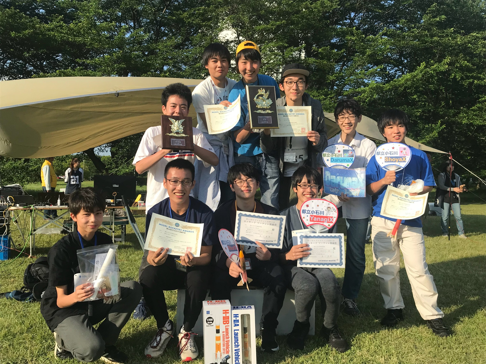

2021
物理研究会 ロケット班 発足！！
ロケット班は2021年に発足しました。当時中学1年生だった生徒(現班長)が「ロケットの部活を作りたい！」という強い思いを抱き、ロケットの部活を作るために、仲間を集め、資料を作り、校長先生に直接プレゼンを行いました。しかし、火薬を扱う活動はケガや事故のリスクがあり、許可を得るのは簡単ではありませんでした。それでも、生徒たちの熱意が校長先生の心を動かし、「物理研究会ロケット班」として正式に発足することができました。

発足して間もない頃
結成当初は、ロケットに関する知識やノウハウがなく、頼れる人もいなかったため、製作は試行錯誤の連続でした。
設計ソフトの使い方もわからず、インターネットでモデルロケットの作り方を調べながら、手探りで製作を進めました。
同級生を誘い、みんなで分担して機体を作り、大会直前になってようやく最後の機体が完成しました。
設計ソフトの使い方もわからず、インターネットでモデルロケットの作り方を調べながら、手探りで製作を進めました。
同級生を誘い、みんなで分担して機体を作り、大会直前になってようやく最後の機体が完成しました。

2022
全国大会初出場ーそして最下位..
ロケット班が発足して初めて挑んだ全国大会。
しかし、初出場の大会は予想外の展開に。悪天候に見舞われた上に、作った機体のほとんどが危険飛行・墜落により失格(DQ)となり、結果はまさかの最下位....。
※全国大会とは、春と秋の年2回、特定非営利活動法人 日本モデルロケット協会が主催する、日本一を競うモデルロケットの大会です
※全国大会について[協会のページ]をどうぞ
しかし、初出場の大会は予想外の展開に。悪天候に見舞われた上に、作った機体のほとんどが危険飛行・墜落により失格(DQ)となり、結果はまさかの最下位....。
※全国大会とは、春と秋の年2回、特定非営利活動法人 日本モデルロケット協会が主催する、日本一を競うモデルロケットの大会です
※全国大会について[協会のページ]をどうぞ

2023
機体変革の時代
全国大会の敗北から、設計と素材を大幅に見直す必要がありました。
それまで機体の大部分をコピー用紙で作っていましたが、コピー用紙は重量が重く、競技用ロケットには不向きでした。そこで、世界で最も軽い木材とされる「バルサ材」に注目し、機体の軽量化を目指しました。
さらに、ロケットの先端部分（ノーズコーン）の製作には3Dプリンターを導入。これにより、複雑な形状の部品も簡単に量産できるようになりました。
それまで機体の大部分をコピー用紙で作っていましたが、コピー用紙は重量が重く、競技用ロケットには不向きでした。そこで、世界で最も軽い木材とされる「バルサ材」に注目し、機体の軽量化を目指しました。
さらに、ロケットの先端部分（ノーズコーン）の製作には3Dプリンターを導入。これにより、複雑な形状の部品も簡単に量産できるようになりました。

2024
念願の全国大会総合優勝！！
ついに、念願だった全国大会で総合優勝を果たしました。
成績、高度競技では1位・2位・3位を独占し、滞空競技では2位を獲得。さらに、総合優勝と準優勝を同時に達成しました。
最初はたった1人の生徒の思いから始まったロケット班。2年間の努力が実を結び、やっと結果を残すことができました。この結果を残せたのは、学校の先生方や保護者の皆さま、そしてロケット製作のアドバイスをくださった方々のおかげです。
成績、高度競技では1位・2位・3位を独占し、滞空競技では2位を獲得。さらに、総合優勝と準優勝を同時に達成しました。
最初はたった1人の生徒の思いから始まったロケット班。2年間の努力が実を結び、やっと結果を残すことができました。この結果を残せたのは、学校の先生方や保護者の皆さま、そしてロケット製作のアドバイスをくださった方々のおかげです。

2025
ロケット甲子園 優勝！！
2025年2月に福島県南相馬市にて行われたロケット甲子園で初出場にして初優勝を飾りました。
初めての大型機体の製作にあたり、モデルロケットに詳しい先生方、先輩等に頭を下げ、技術を学びました。頑張ってきた成果を発揮することができ、ついに世界出場が決まりました。
初めての大型機体の製作にあたり、モデルロケットに詳しい先生方、先輩等に頭を下げ、技術を学びました。頑張ってきた成果を発揮することができ、ついに世界出場が決まりました。